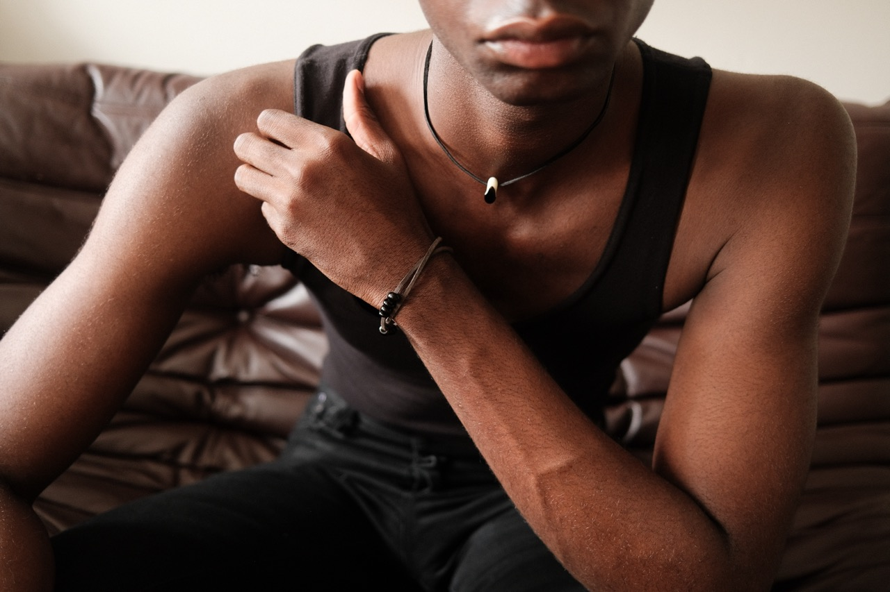
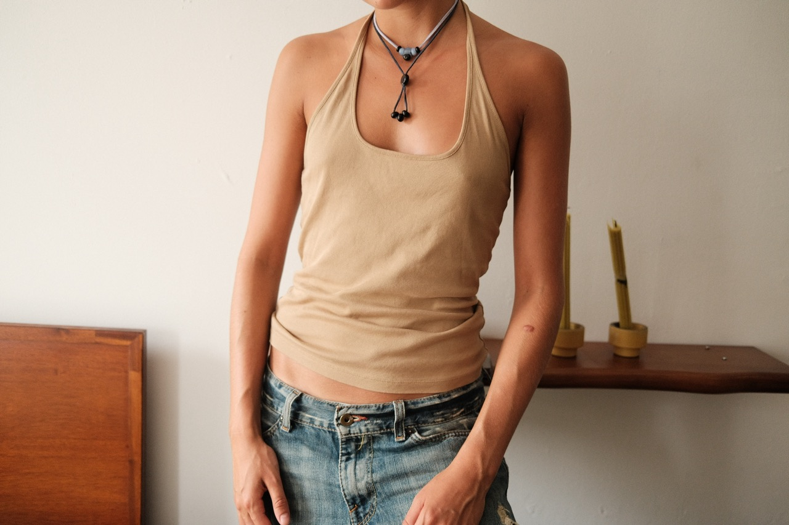
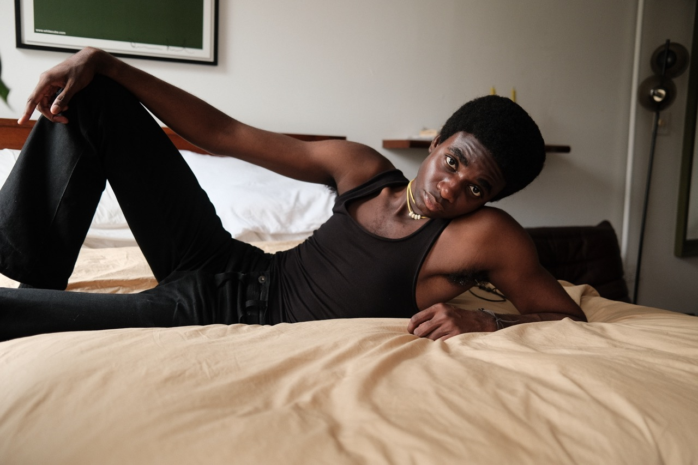
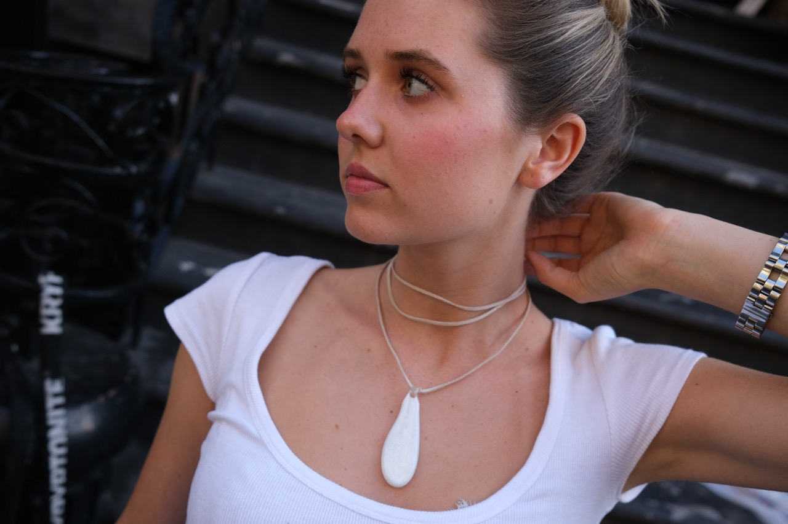
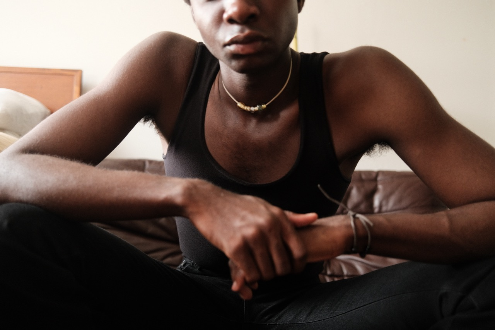
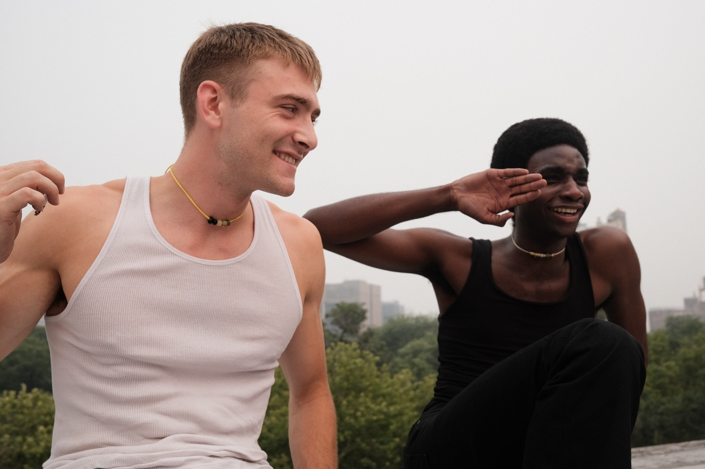
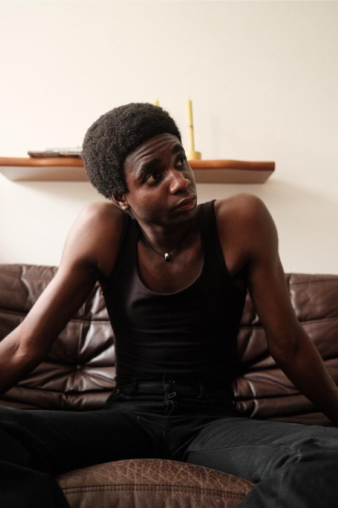
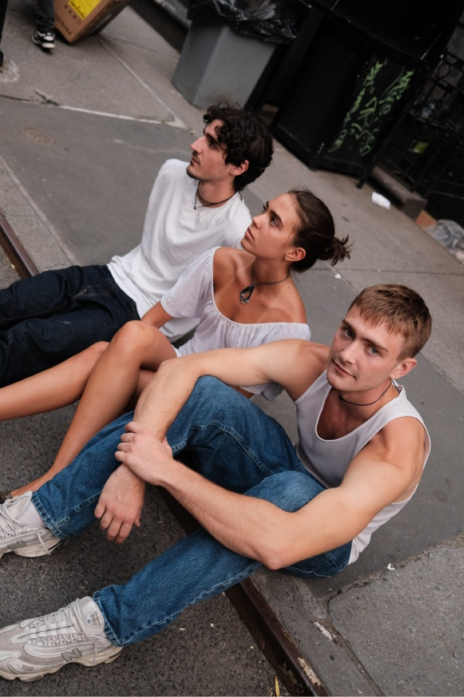
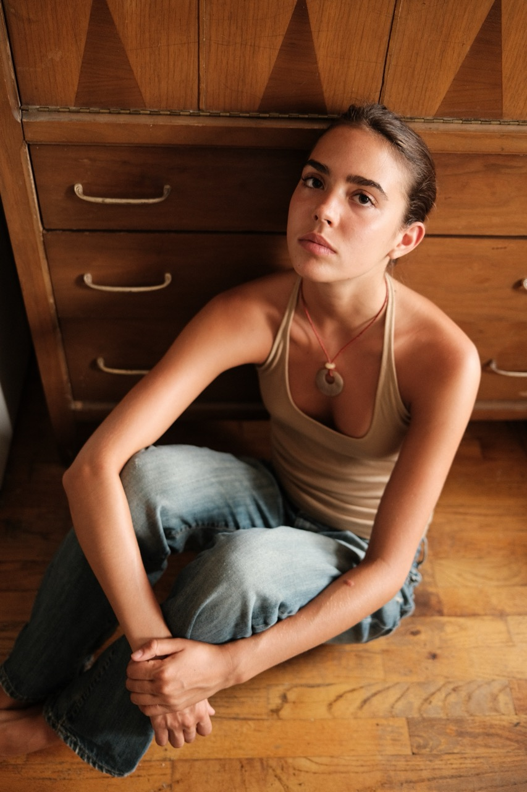

juma jewelry



Juma is a jewelry brand I co-founded with Julia Majchrzak. Each piece is made from handmade glass beads and pendants, cord cut from leather and suede, and a range of found materials. At its core, Juma is an attempt to rethink what jewelry can be beyond an accessory: a form of wearable art, where color and shape play out on the body the way they would on a canvas.
Two principles guide our work. The first is that jewelry should be for everyone. Our pieces are unisex by design, conceived from the outset to be worn by anyone. The second is a commitment to sustainability and versatility. We work with with found objects, secondhand leather and suede, and remnant glass wherever possible, and we design each necklace to be worn in more than one way: cords can be tied differently, beads can be added or removed, and individual pieces can be combined with one another to create new looks.
I take part in every stage of the process, from beadmaking and material sourcing then designing jewelry to directing campaign photography.





